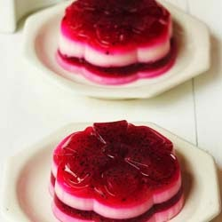

Puding Buah Naga

Bahan Merah:
- 350 gr buah naga merah tanpa kulit (Blender)
- 100 gr gula pasir (kalau suka manis bisa ditambahkan)
- 1 bungkus agar-agar bubuk putih
- 600 ml air
Bahan Putih:
- 1 bungkus agar-agar bubuk putih
- 50 gr cokelat putih
- 50 gr gula pasir (bisa ditambahkan sesuai selera)
- 600 ml air
- Vanilla pasta secukupnya (saya pakai merk toffieco)
Cara Membuat :
- Campur bahan merah, didihkan. Angkat dan tuang sebagian kedalam cetakan hingga mengeras, bekukan.
- Campur bahan putih kecuali vanilla pasta didihkan. Angkat, kemudian biarkan sebentar lalu beri vanilla pasta, aduk rata. Tuang sebagian di atas puding merah, bekukan
- Tuang lagi adonan merah berselang seling sampai adonan habis
- Terkahir, setelah semua adonan habis, dinginkan kembali bebrapa saat dan siap disantap.